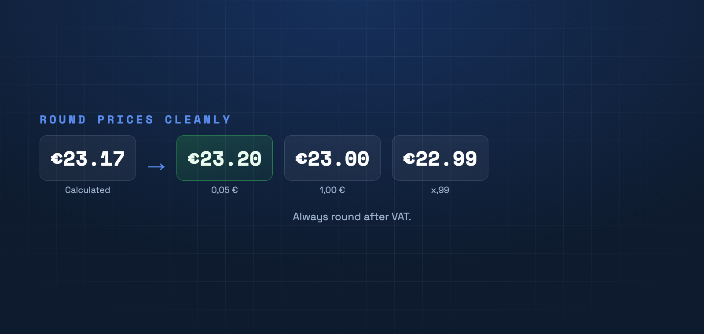

€23.17 looks arbitrary. Rounded end prices look more professional and sell better. Here's what to round to — and why after VAT.

Why round?
Calculated prices often have odd decimals. Rounded prices look deliberate and build trust. On top of that you can use pricing psychology: threshold prices like €19.99 instead of €20.00 feel noticeably cheaper, even though the difference is a single cent.
What steps to round to
Common rounding steps are €0.05, €0.10, €0.50 and €1.00. For psychological prices you deliberately target x.99 or x.95. Consistency across the catalog matters — not one way here and another there.
Always round after VAT
Round the gross price, not the net price. Otherwise the end price won't be clean once tax is added. Calculate first, then round as the final step.
Apply rounding automatically
PriceCalc Pro rounds calculated sell prices to your chosen step on save — consistently across your whole catalog.
See PriceCalc Pro →